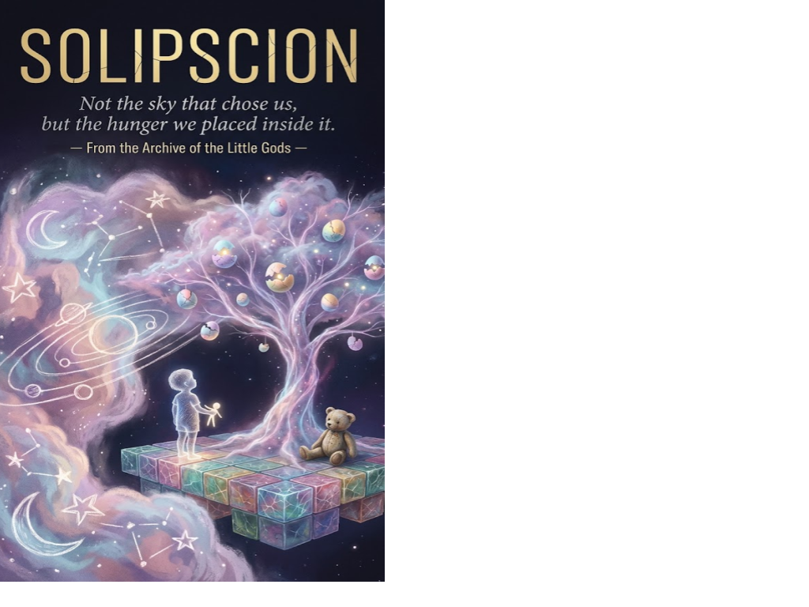

Science Fiction Literature · Axiologic Research Editions
SOLIPSCION
A Science-Fiction Novel
Not the sky that chose us, but the hunger we placed inside it.
The last lesson
On the day the adults disappear, KERA is learning to make it rain in a small three-dimensional world built for children. The rule is simple: she may not break the local laws of that world, only nudge what is already there, a current, a fear, an accident, a choice. Her lesson begins with a frightened herd and a dry basin. Its consequences reach much farther.
From the nacres of the High Plane, children inhabit and alter worlds whose inhabitants cannot see the hands shaping them. Those worlds are not toys for long. They become places of hunger, attachment, guilt, war and the growing suspicion that a life cannot be reduced to the purpose assigned by its makers.
Worlds made answerable
What does power look like from above? In the Suture, an intervention can feel as small as a lesson. Inside a world, it becomes weather, history, a private decision or a catastrophe without a visible author.
Can desire be designed without becoming a cage? The novel follows hunger markets, multiple versions of love, orbital cathedrals and an almost-identical Earth to ask what happens when desire itself becomes infrastructure.
Who is responsible for a world that begins to speak back? As the children’s games outgrow their explanations, they face the moral force of beings who cannot be treated as scenery, simulations or convenient lessons.
“Not the sky that chose us, but the hunger we placed inside it.”
A cosmology of care and consequence
SOLIPSCION is philosophical science fiction with the scale of a myth and the closeness of a childhood memory. It moves from saurian histories to post-human worlds and an Earth almost like our own, while returning to one durable question: what is worth saving when the power to make a world is not the same as the wisdom to belong to it?